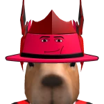
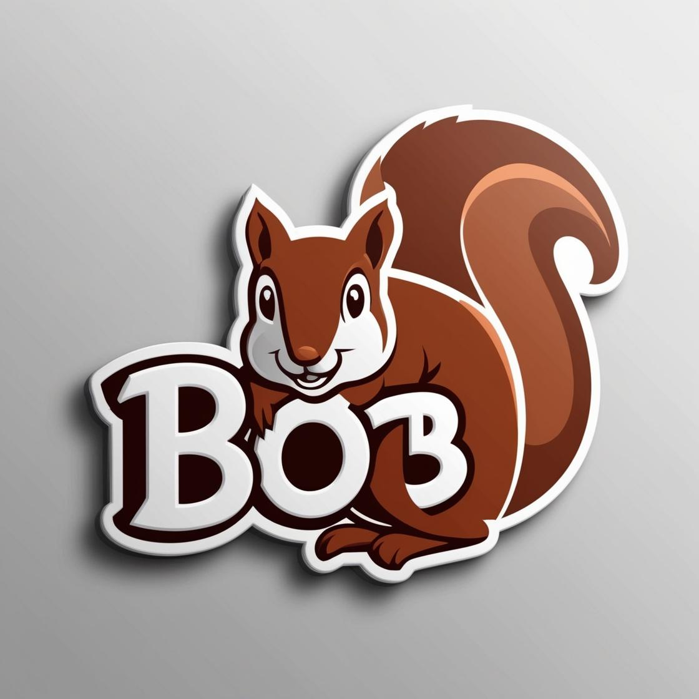
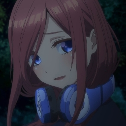

GREENVX
Servidor Roleplay de Greenville Roblox
Vive la experiencia de roleplay más inmersiva en Greenville. Únete a nuestra comunidad y forma parte de la historia.
Únete AhoraFundación
29 Julio 2025
Verdadero Crecimiento
Octubre 2025
Miembros Actuales
600 Miembros
Primera Sesión Llena
14 Dic 2025
Último Hito
600 Miembros
Fecha del Hito
22 Feb 2026
Nuestra Historia
Los Orígenes - Marzo 2025
Todo comenzó con Andrés, mejor conocido como Bob la Ardilla, quien formaba parte del equipo de staff del servidor GVRP. El 13 de marzo de 2025, un raid afectó gravemente al servidor. Este evento impulsó a varios miembros del staff a unirse con una idea clara: crear algo nuevo, más sólido y mejor estructurado. Así nació GVX.
Primer Intento - Primavera 2025
El servidor GVX se lanzó con fuerza y, en sus primeras semanas, logró atraer a más de 80 jugadores. Sin embargo, el owner principal no contaba con el tiempo suficiente para supervisar el proyecto y parte del staff no mantenía el compromiso necesario. Como consecuencia, el servidor tuvo que cerrar temporalmente. Pero la historia no terminó ahí.
El Renacer - 29 de Julio 2025
Bob, junto con Alonso, tomó la decisión de revivir GVX. Esta vez, el proyecto regresó con más experiencia, mayor organización, recursos suficientes y un equipo verdaderamente comprometido. La visión era clara: construir un servidor de roleplay profesional, estable y sostenible, donde la comunidad fuera la base de todo.
El Verdadero Crecimiento - Octubre 2025
El verdadero punto de inflexión llegó en octubre de 2025, cuando GVX comenzó un crecimiento acelerado, atrayendo a una gran cantidad de usuarios en muy poco tiempo. El equipo había demostrado que el compromiso y la dedicación podían transformar un proyecto en una comunidad vibrante.
100 Miembros - 28 de Octubre 2025
El servidor alcanzó por primera vez los 100 miembros, marcando el inicio de una nueva etapa. Este hito demostró que GVX había logrado captar la atención de la comunidad de Greenville Roblox y que el proyecto tenía un futuro prometedor.
200 Miembros - 12 de Noviembre 2025
GVX llegó a los 200 miembros, consolidándose como una comunidad en expansión. El crecimiento continuaba sin detenerse y cada día más jugadores descubrían la calidad del roleplay en GVX.
300 Miembros - 6 de Diciembre 2025
Se alcanzaron los 300 miembros, demostrando que GVX había pasado de ser un proyecto revivido a convertirse en una de las comunidades más importantes del roleplay en Greenville.
Primera Sesión Llena - 14 de Diciembre 2025
Uno de los momentos más importantes en la historia del servidor: GVX logró llenar una sesión por primera vez, demostrando el impacto real y la popularidad que había alcanzado el proyecto. La comunidad celebró este logro como símbolo del éxito colectivo.
400 Miembros - 25 de Diciembre 2025
Como un regalo de Navidad para toda la comunidad, GVX llegó a los 400 miembros. El año terminaba con un crecimiento extraordinario y la promesa de un futuro aún más brillante.
500 Miembros - 17 de Enero 2026
El nuevo año comenzó con fuerza. GVX alcanzó los 500 miembros, superando todas las expectativas y demostrando que el proyecto no solo era sostenible, sino que continuaba creciendo a un ritmo impresionante.
Votación Récord - 8 de Febrero 2026
En una mañana histórica para GVX, el servidor obtuvo una votación de sesion con 21 votos en menos de 10 minutos. Este logro sin precedentes demostró el nivel de compromiso y actividad de la comunidad, consolidando a GVX como un servidor más activo y participativo de Greenville Roblox. La rapidez con la que se alcanzó esta votación dejó en claro que la comunidad no solo crecía en números, sino también en calidad y dedicación.
Raid Neutralizado - 8 de Febrero 2026 (Tarde)
El mismo día de la celebración, GVX enfrentó su mayor amenaza desde el renacer: un intento de raid coordinado contra el servidor. Sin embargo, gracias a la vigilancia constante del owner Bob la Ardilla y el equipo de staff, la amenaza fue detectada a tiempo. Con medidas de seguridad preventivas y una respuesta rápida y coordinada, el raid fue neutralizado antes de que pudiera causar daño alguno. Este evento demostró la madurez del equipo administrativo y su capacidad para proteger a la comunidad ante cualquier adversidad, recordando las lecciones aprendidas del raid original que dio origen a GVX.
Reanudación Total - 20 de Febrero 2026
Tras los eventos del 8 de febrero y como medida de precaución, el servidor había implementado protocolos de seguridad adicionales. El 20 de febrero de 2026 marcó el regreso a la normalidad completa. Las actividades del servidor se reanudaron con total normalidad, con eventos regulares, sesiones de roleplay y la misma energía vibrante que caracteriza a GVX. La comunidad celebró este retorno con entusiasmo renovado, demostrando que ninguna amenaza podía detener el espíritu y la pasión que define a GreenVX.
600 Miembros - 22 de Febrero 2026
Solo dos días después de la reanudación completa de actividades, GVX alcanzó un nuevo hito monumental: 600 miembros. Este logro cobra especial significado al llegar tan poco tiempo después de superar la amenaza del raid, demostrando que la adversidad solo fortaleció a la comunidad. La cifra de 600 miembros representa no solo el crecimiento numérico, sino también la resiliencia, la unidad y la confianza que los jugadores depositan en GVX. El servidor se ha consolidado como una comunidad grande, activs y respetada del roleplay en Greenville Roblox.
El Presente - Un Futuro Brillante
Hoy, GVX se encuentra en su mejor momento. Con 600 miembros, un equipo de staff y hosts comprometidos, eventos mensuales que mantienen a la comunidad emocionada, y una estructura sólida que premia el esfuerzo, la dedicación y el buen roleplay, el servidor continúa su ascenso imparable. Este renacer marcó una nueva era para GVX: una donde cada jugador importa, donde el roleplay se vive con intensidad, respeto y pasión, y donde cada desafío superado solo hace más fuerte a la comunidad. El futuro nunca se ha visto más prometedor, y la historia de GVX apenas está comenzando.
Staff del Mes
Próximamente
Primer Lugar
Próximamente
Segundo Lugar
Próximamente
Tercer Lugar
Próximamente
Cuarto Lugar
Próximamente
Quinto Lugar
¿Quieres aparecer aquí?
Demuestra tu compromiso con GVX. Participa activamente, ayuda a la comunidad, mantén el orden en el servidor y destaca por tu profesionalismo. Los mejores staffs son reconocidos mensualmente por su dedicación y esfuerzo.
Host del Mes
Próximamente
Primer Lugar
Próximamente
Segundo Lugar
Próximamente
Tercer Lugar
Próximamente
Cuarto Lugar
Próximamente
Quinto Lugar
¿Quieres aparecer aquí?
Demuestra tu compromiso con GVX. Organiza eventos creativos, mantén a la comunidad entretenida, crea experiencias memorables y demuestra pasión por el roleplay. Los mejores hosts son reconocidos por su creatividad y dedicación.
Jugador del Mes
Próximamente
Primer Lugar
Próximamente
Segundo Lugar
Próximamente
Tercer Lugar
Próximamente
Cuarto Lugar
Próximamente
Quinto Lugar
¿Quieres aparecer aquí?
Demuestra tu compromiso con GVX. Participa activamente en el roleplay, respeta las reglas, sé amable con otros jugadores y crea historias increíbles. Los mejores jugadores destacan por su actitud positiva y su pasión por el juego.
Galería de Media
Información del Servidor
📅 Creación
29 de Julio, 2025
📈 Verdadero Crecimiento
Octubre 2025
👥 Usuarios Activos
Conectando con Discord...
Equipo de Administración
Owner
Bob la Ardilla
(Andrés León)

Roblox
DiscordCo-Owner
Valreek
(Ralzeek, Thalveen, Alonso)

DiscordNota: El equipo de Staffs y Hosts está en constantes cambios para mantener la calidad del servidor. Por esta razón, no se listan individualmente aquí. Consulta el canal correspondiente en Discord para ver el equipo actual.